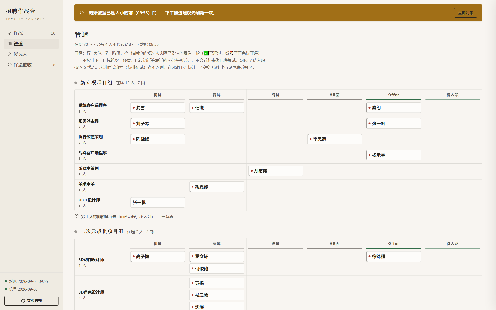

43
在招岗位 · 全流程
数据从公司招聘系统官方接口实拉，脚本约 100 秒复现一次。推荐触达 400+ 是人工去重口径（精确值 423）——真正的筛选发生在这里到进流程之间的 62%。
* 9 月截至 9-08。5 月自 5-22 首个岗位创建起算。进流程按候选人首次进入月归属。

招游戏的人，自己也玩游戏。这一栏是品类功课——面试聊到任何品类，都接得住。
吴春波，广东外语外贸大学应用心理硕士，2027 届。2026 年 5 月起在一家游戏公司做研发线招聘实习，一个人对接 4 个项目团队 + 6 个职能团队，正式岗和实习批量岗全流程。
心理学背景给我的东西很具体：面试时读人，设计流程时想「人为什么会这么做」——所以我的工具都在解决人的问题：漏看的消息、发错的邀请、等太久的候选人。
这句话在美术岗是风格范本，在 AI 岗是行为层判据，在我自己的工作里，是 16 个开源 skill。